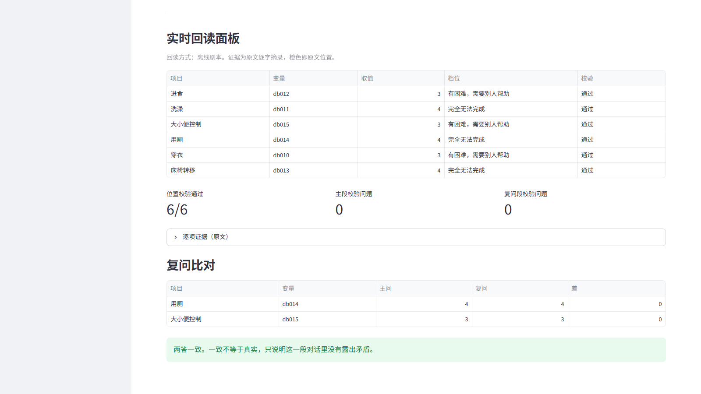
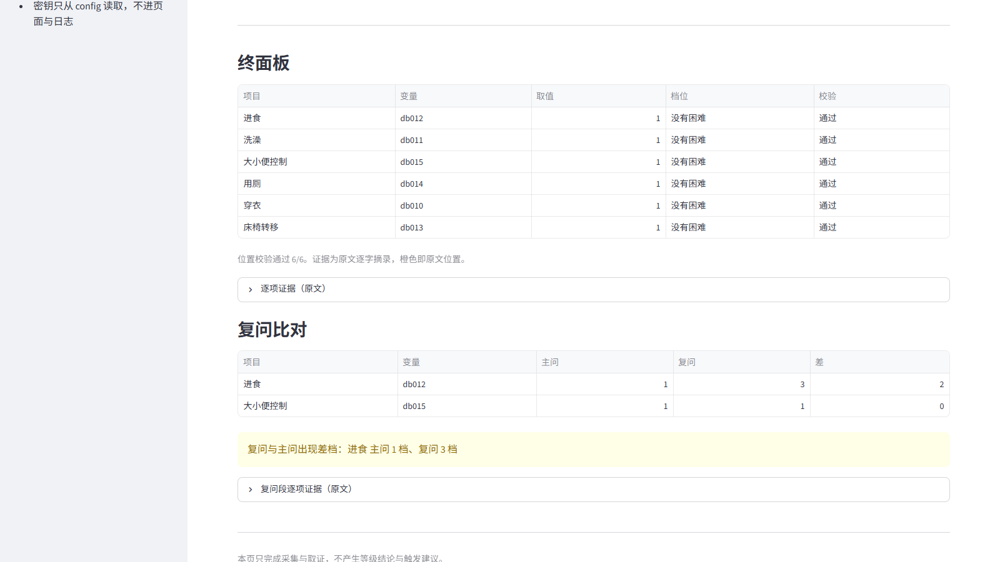
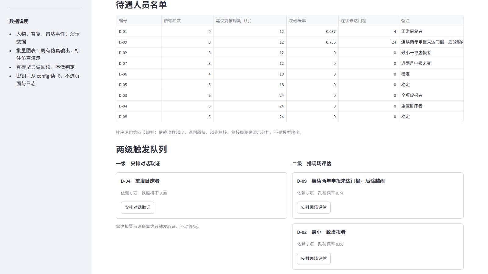
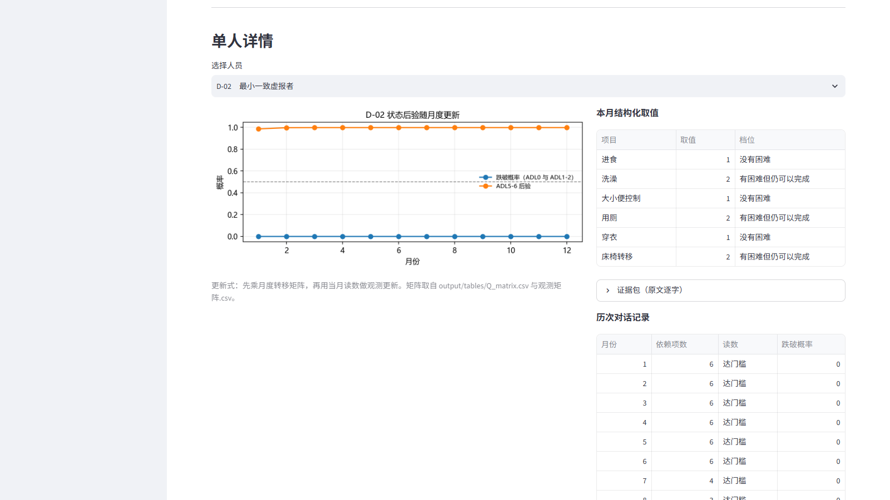
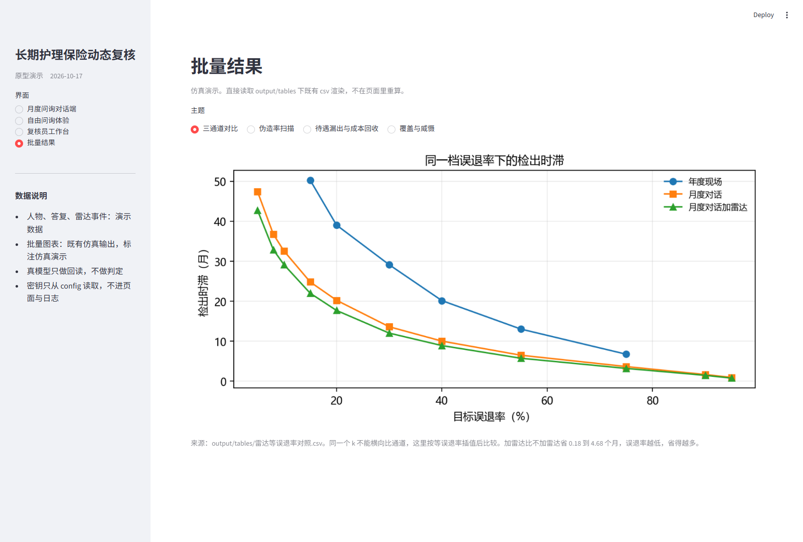
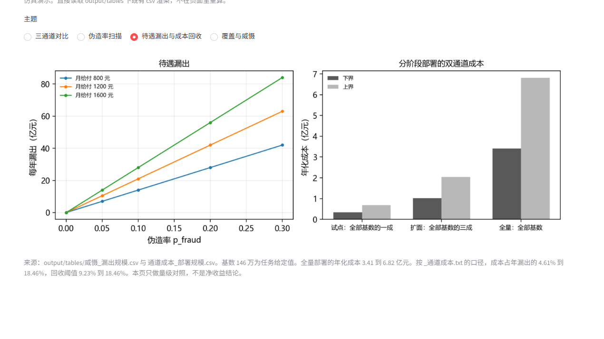

下面三项结论均来自交付包内的测算报告，数字按报告口径标注，仿真假设与真实发生率在数据与边界部分说明。
月度对话问询把状态退回的检出时滞缩短约45%至50%，状态变化不必等到下一次年度现场评估才被发现。
单人次月度对话的算力成本约0.001至0.008元，高频观测的边际成本很低，具体量级以测算报告口径为准。
高频观测只更新状态后验，现场评估仅在触发判据满足时安排，不会把所有人都推去上门评估。
失能状态会随时间双向变化，而现行待遇资格管理以低频现场评估和定期复核为主，两次评估之间的状态变化难以被看见。这是一套以 CHARLS 数据为基础、面向长护险待遇资格动态管理的监测与复核支持系统，在不替代行政裁量的前提下，把监测、取证与复核排序组织成一套可在本地运行的流程。
以失能依赖项数识别状态退回风险更高的人群，形成复核排序与差异化周期。依赖项少、退回更快的人排在前面优先复核，而不是按年龄或等级平均安排。
以对话式月度问询作为高频观测，按月更新状态后验，把一年一次的现场评估变成每月一次的观察，恢复与退回的过程都能被连续记录。
以毫米波雷达被动监测作为非合作信号，对照申报内容与实际行为，发现两者不一致的地方，形成防伪与威慑。雷达只标出需要进一步核实的对象，不直接判断等级。
系统按事件、观测、结论三层组织。下面逐层说明每一层处理什么信息、为什么这样安排，以及一条信号从产生到最终处理会经过哪些步骤。
原型包含四个页面，下面按对话端、工作台、批量结果三个模块展示真实界面，所有截图均来自本地运行的原型。
按当月随机顺序询问六项日常活动，把自由表述对应到四档取值并标注逐字证据；主问之外另起复问，抽取两项再问一次。这一页只记录、只取证，不显示等级结论。


待遇人员名单按依赖项数排序，两级触发队列区分对话取证与现场评估；单人详情给出随月更新的状态后验曲线、本月结构化取值与雷达事件流。


直接读取测算结果表渲染，呈现三通道检出时滞、待遇漏出与分阶段部署成本。图表为仿真演示，不在页面内重算，数字口径以测算报告为准。


原型在本地运行，约30秒启动；不配置任何接口密钥时，以离线模式完整运行，全程不联网。
按内置演示剧本生成问答与事件，四个页面、四个案例与全部测算图表均可完整展示，断网环境下不受影响。
在 config/接口配置.txt 填写接口信息，问询回读交由真实大模型完成；密钥仅保存在本地，调用失败自动回退离线模式。
状态转移与观测矩阵由 CHARLS 四波面板（2011、2013、2015、2018年）估计，其中体能测试覆盖前三波。
伪造率、矛盾事件率、覆盖率等参数均为情景假设，不作为真实发生率估计，并在报告中明确标注假设区间。
原型中的全部人物、答复与雷达事件均为演示虚构，不涉及任何真实个人。
雷达事件仅进入触发队列，不直接生成等级结论；等级变更由经办机构按现场评估程序裁定。
本原型暂不含语音输入、语音转写、电话外呼与声纹识别，这些属于下一阶段真人试点内容。